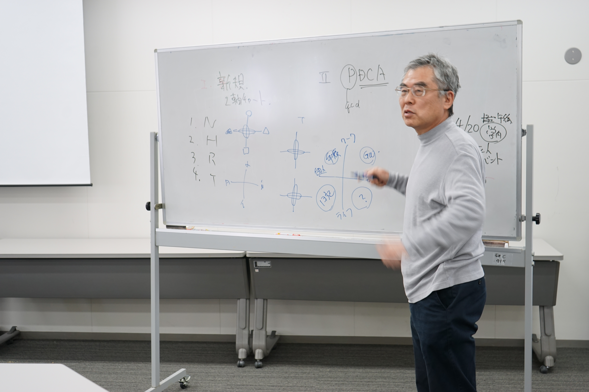

先生からの言葉
未来を担う君達へ
上林 憲行
担当教授：所属メディア学部 メディア学科
大学院 メディアサイエンス専攻役職/職名教授/就職部長学位工学博士専門分野サービス工学/サービス臨床工学/ネットワーク生態学
A：SXDは、社会やビジネスに新しい価値をもたらすユニークなユーザ体験価値を提供するサービスやソリューションのデザイン実践を行なう卒研プロジェクトです。SXDの活動は、『ユーザ体験価値を、デザイン思考の方法論を用いて考案し、ICT能力を活用して、サービスとして実現すること』を目指します。このような知識やスキルを持った人財は現代社会が求めている最もホットでトレンディな人財ニーズ（UXデザイナー）に合致します。
Q：具体的にはどんなサービスが注目を集めていますか？
A：サービスに関する最近のトピックスとしては、LINEやTwitterなどのソーシャルメディアサービス、スマートフォンに焦点を当てたスマートモバイルサービス、クラウド（雲）・クラウド（群衆）サービスなどが代表的です。 また、最近は、シェアエコノミー時代を切り開く、民泊サービスAirBnB、タクシーサービスのUber、クラウドワークスやクラウドファンディングなども注目を浴びています。このような最新のメディア・サービス環境を前提として、人と人の豊かな交流・絆、共成長・共感、ケア・癒し、感動などの、利便性や機能的な価値を超えたユーザ体験価値をサービスとしてデザインしてゆく活動を行います。 ユーザ体験（UX）価値は、ICT分野だけでなく、コンビニ、銀行、メーカー、広告、ディズニーランドまでその重要性が浸透して来ていてる時代を先取りするキーワードです。21世紀においては、すべての製品やサービスは単なる利便性の提供を超えて、ユーザに感動や共感を与えるリッチな体験価値の提供を目指すものです。 CX（顧客体験価値）とも呼ばれます。
A：UXの元々の定義は、「ある製品やサービスを利用したり、消費した時に得られる体験の総体。個別の機能や使いやすさのみならず、ユーザが真にやりたいことを楽しく、心地よく実現できるかどうかを重視した概念である」となっています。例えば、時計は、正確に時刻を知らせるという基本機能を追求することで製品の競争が行われてきました。ところが、美人時計（URLを埋め込んで）というサービスが、正確に時を知らせる機能を超えて、時計を確認することが、町中の美人に会える癒しと休息の時を提供するものに変貌しました、正にユーザ体験価値のアイディアの勝利です。
Copyright SXD2016 N班